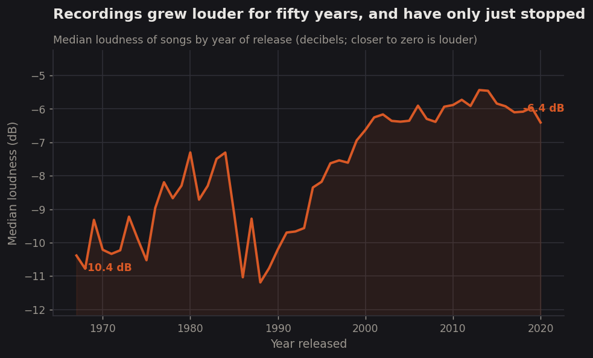
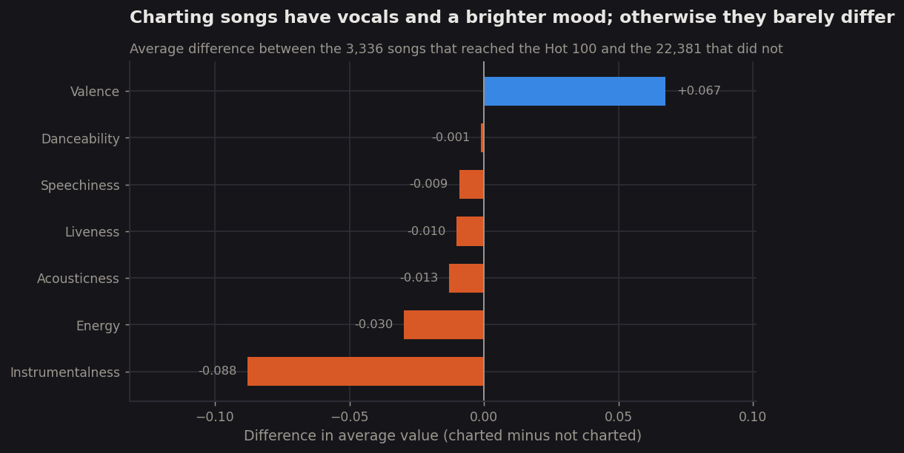
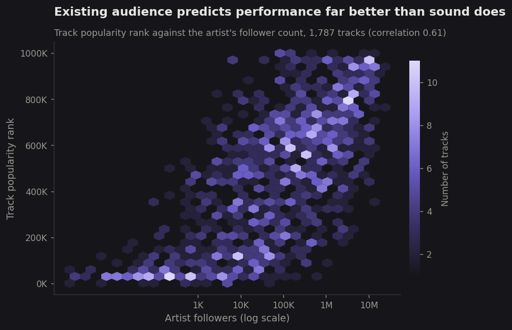
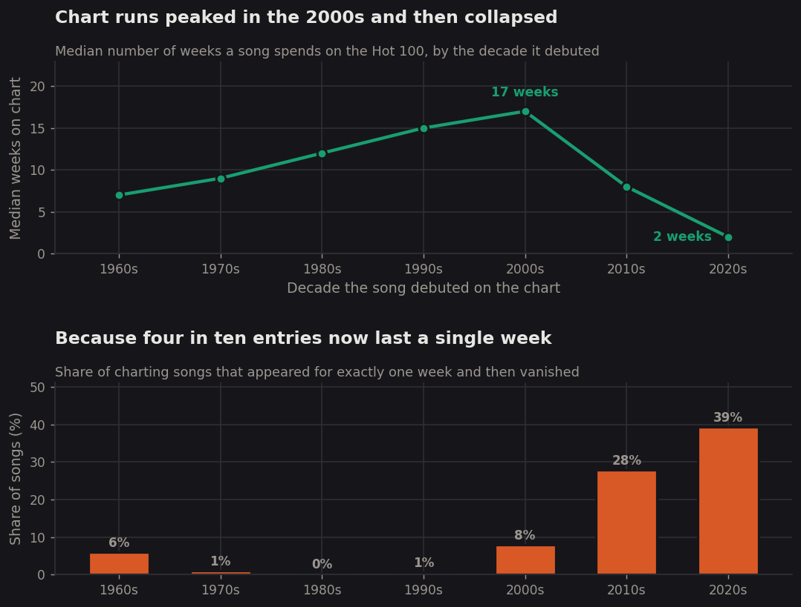

Conclusions
The question this project set out to answer was whether the success of a song can be heard in the song. After working through roughly 26,000 recordings and sixty-eight years of chart history, the answer is clear enough to state plainly: hardly at all.
The starting point was a simple observation about the scale of modern music. Something like 106,000 new recordings are delivered to streaming services every day, and almost none of them will ever be heard by anyone. Close to half the recordings available on those services were played ten times or fewer across an entire year, and nearly nine in ten fell below the threshold where a song earns its maker any money at all. Against that backdrop, the question of what separates the few songs that travel from the overwhelming majority that sit untouched stops being an idle curiosity and becomes the central economic fact of a working musician's life. The hope behind a project like this one is that the difference might be audible — that something about how a successful record is put together could be measured, described, and perhaps learned from. That hope has a long history and a poor record, and this work does nothing to rescue it. What it offers instead is a reasonably careful measurement of how small the audible difference actually is, which is a useful thing to know even though it is not the thing anyone wanted to find. The measurement was taken several different ways, with increasingly capable tools, and the answer barely moved. A negative finding arrived at carefully is still a finding. It is also, in this case, the more interesting of the two possible outcomes, because a formula for a hit song would have been a smaller and sadder discovery than a clear account of why no such formula exists.
What the recordings do show, clearly and consistently, is that popular music has changed a great deal over sixty years, and that those changes can be measured rather than merely asserted. Recordings grew steadily louder for half a century, from the 1960s through the 2010s, as each release competed to sound bigger than the one before it on the radio. That climb stopped recently and even reversed slightly, which lines up with streaming services deciding to even out playback volume and quietly removing the advantage of being loud. Songs grew longer through the album era, peaking at about four and a half minutes around 1990, and have since shrunk back to roughly where they were in the 1960s, because a listener who can skip at no cost has to be caught immediately. The emotional colouring shifted too, holding steady for four decades and then dropping sharply in the 2010s toward something noticeably less cheerful. Writing moved away from major keys decade after decade, from about four songs in five in the 1960s to closer to one in two today. None of these changes was decreed by anyone. Each emerged from millions of separate decisions by writers, producers and engineers, all responding to how music was being sold and heard at the time. Taken together they amount to a record of the industry's own history, written into the recordings themselves without anyone intending to write it. That history is legible, and it is the most solid thing this project found.

Against that backdrop of real, measurable change, the comparison between songs that reached the chart and songs that did not is startlingly flat. Put the two groups side by side on every quality that can be measured in a recording and they look almost identical. The songs that charted are slightly more likely to have vocals and slightly more cheerful, and that is essentially the whole list. On how danceable a record is — the quality most people would guess matters most — the two groups differ by an amount so small it would be invisible to any listener. The gaps that do exist are real, in the sense that they show up consistently across thousands of songs, but they are nothing like large enough to tell one song from another. A person handed two unlabelled recordings, one a hit and one unheard, would have essentially no measurable acoustic basis on which to say which was which. This is the single most important picture in the project, and its importance comes entirely from how boring it is. Everything that followed was an attempt to find structure underneath that flatness, using progressively more powerful tools, and the flatness held.

If the answer is not in the sound, the obvious next question is where it is, and the data points firmly in one direction. How large an audience an artist had already gathered before releasing a song tracks that song's performance far more closely than any quality of the recording does — the relationship is roughly four times stronger than the best one found anywhere in the audio. That single comparison reframes the entire project. It suggests that a great deal of what gets called talent, or ear, or knowing what the public wants, is in practice a measure of reach: who was already listening, which playlists a record landed on, what else was released that week, and how much was spent making sure people encountered it. None of that is audible, and none of it is in these recordings. It is worth saying plainly that this does not mean the music is irrelevant, because a record that nobody wants to hear twice will not travel however it is promoted. It means the music appears to be closer to a requirement than to an explanation. Being good enough seems to be necessary and nowhere near sufficient, and the part that decides between the many records that clear that bar lives somewhere else entirely. That is an uncomfortable conclusion for anyone who would like success to be earned inside the studio. It is also what the evidence here says.

The most revealing part of the work came from handing the problem over to tools that learn from examples rather than being told what to look for. Given tens of thousands of songs already labelled as hits or not, and asked to judge new ones, every approach tried here reached the same conclusion and acted on it: since the overwhelming majority of songs do not chart, the safest answer is always no. Judged on how often that answer is correct, it scores extremely well, which is exactly how a useless answer can look like a good one. Out of 684 genuine hits held back for testing, the best attempt identified 29. But asked a gentler question — not "will this song chart" but "put these songs in order from most to least likely" — the same tools did noticeably better than chance, and the more capable ones did better still. Something in a recording really is connected to its commercial fate. It is simply far too faint to justify a confident statement about any one song. The practical version of this is worth stating clearly: nobody should expect a reliable way to pick hits from audio, while a way of nudging a long shortlist into a slightly better order is within reach and might genuinely save someone time. Those two sentences are not in tension, and the difference between them is the main technical lesson of the whole project.
One further change deserves attention, because it alters what the question even means. The charts themselves no longer work the way they did. A song that entered the chart in the 2000s typically stayed on it for seventeen weeks; a song entering today typically stays two. Nearly four in ten recent entries appear for a single week and vanish, where in the 1980s that almost never happened, because entire albums now arrive on the chart the day they are released and fall off immediately. At the same time, the variety of songs appearing anywhere on the chart shrank steadily for forty years and has since bounced back to where it was in the 1960s, with the turning point sitting close to the moment streaming counts were folded into the formula. Reaching the chart in 1985 and reaching it in 2025 are different achievements measured by the same name. That matters for a project like this one, because the thing being predicted is not a fixed target: it is a scoreboard that has been quietly rebuilt twice while the game was running. Some of the difficulty found here may be the difficulty of predicting a moving definition. It would be dishonest to claim otherwise, and equally dishonest to use it as an excuse, since the flatness in the audio comparison has nothing to do with how the chart is counted.

So what should someone take from all of this? For a musician, the honest message is both discouraging and freeing: there is no arrangement of tempo, loudness, length or mood that will make a record succeed, and the time spent chasing one is better spent on the things that actually move the odds, nearly all of which are about reaching people rather than about the recording. For a listener, the finding is a reminder that what arrives in a feed is not a verdict on quality, and that the enormous invisible majority of recordings below the threshold is not there because of how it sounds. For anyone in the business of deciding which music gets promoted, the result is a caution: the confidence with which those decisions are made is not supported by anything measurable in the recordings themselves. The project's limits should be stated alongside its conclusions. It worked with summaries of each recording rather than the audio itself, it could not see release dates, budgets, playlist placements or promotional effort, and the chart it used covers the United States alone. Any of those gaps could hide something. But the pattern across the whole project points one way rather than two: increasingly capable approaches, all given the same evidence, arrived at the same ceiling instead of climbing steadily toward it, and that is more typical of evidence that has been used up than of tools that are not yet good enough. The sensible next step is therefore not a cleverer method. It is better evidence — who was listening already, where the record was placed, and what was spent — which is to say, the parts of success that were never in the music to begin with.